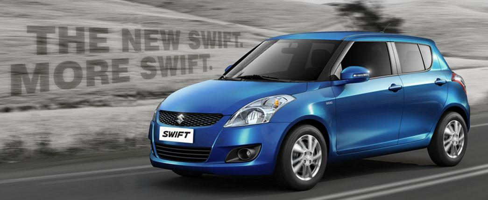

Maruti Suzuki Swift
It is one of the cars we have been lusting after for many years in India but to no avail. Yes, we are talking about Suzuki’s Swift Sport hatchback which is now towards the end of its second generation. Following in the footsteps of its standard sibling, which will be unveiled in summer 2017, there will be a new Swift Sport next year and it will, for the first time, sport a turbocharged petrol engine. This engine is the 1.4-litre K-series mill and is expected to produce the same 138bhp.